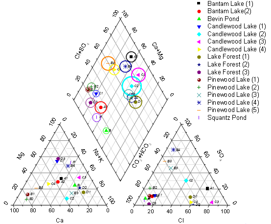
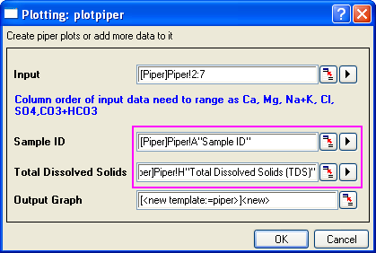
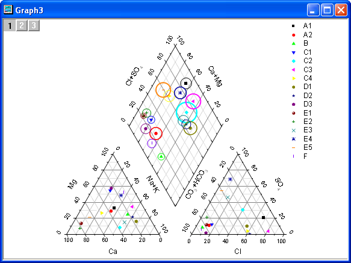
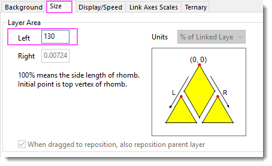
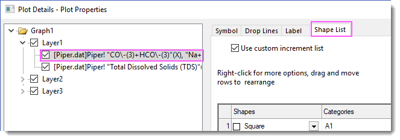
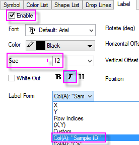
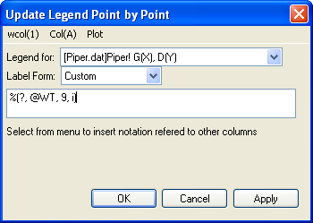

Piper-Diagramm
piper-diagram
Zusammenfassung
Das Piper-Diagramm (oder Trilineares Diagramm) wird als eine effektive grafische Darstellung der chemischen Zusammensetzung von Wasserproben im Rahmen von hydrogeologischen Untersuchungen eingesetzt. In der Zeichnung werden die Prozentwerte der sechs Ionen-Gruppen berücksichtigt. Es handelt sich hierbei um Kalzium, Magnesium und Natrium plus Kaliumkationen sowie die Sulfat, Chlorid und Kohlenstoff plus Hydrogenkarbonatanionen.
Die Kationen und Anionen werden mit zwei getrennten ternären Diagrammen dargestellt, die dann beide auf eine Raute projiziert werden. In Origin werde Sie als ein Diagramm mit drei Layern gezeichnet.

Was Sie lernen werden
Dieses Tutorial zeigt Ihnen, wie Sie:
- ein Piper-Diagramm aus Prozentdaten erstellen.
- die Lücke zwischen dem Ternärdiagramm und der Raute im Piper-Diagramm benutzerdefiniert anpassen.
- Datenbeschriftungen zu dem Piper-Diagramm hinzufügen.
Schritte
- Öffnen Sie eine neue Arbeitsmappe und wählen Sie Daten: Mit Datei verbinden: Text/CSV, um die Datei Piper.dat aus dem <Origin-Verzeichnis>\Samples\Graphing zu importieren.
- In dem importierten Arbeitsblatt ist Spalte A die Sample-ID. Spalte B bis G sind die Prozentwerte für die sechs Ionengruppen in der Reihenfolge Ca, Mg, Na+K, Cl, SO4 und CO3+HCO3. Spalte H ist die Menge an gelösten Feststoffen im Wasser insgesamt. Die Prozentangabe für die Gruppe der Kationen ist relativ zu der Gesamtmenge der Kationen. Die Prozentwerte der Anionen-Gruppen wird auf die gleiche Weise berechnet.
- Hinweis: Sie haben einige Standardvorlagen für die Arbeitsmappe, die Ihnen dabei helfen, Daten aus unterschiedlichen Einheiten (MEq/mgL/PPM) in Prozentwerte umzuwandeln (öffnen Sie sie über Datei: Neu: Aus Vorlage:). Weitere Informationen finden Sie in der Hilfe .
- Markieren Sie Spalte B bis G und wählen Sie Zeichnen: Spezialisiert: Piper im Menü, um den Dialog plotpiper zu öffnen.
- Wählen Sie Spalte A für Sample-ID und Spalte H für Gelöste Feststoffe gesamt:
- 
- Hinweis: Sie können ein vorhandenes Piper-Diagramm als Ausgabediagramm festlegen und die ausgewählten neuen Daten zu diesem Piper-Diagramm hinzufügen.
- Klicken Sie auf OK, um das Piper-Diagramm zu erzeugen.
- 
- Die Sample-ID und die gelösten Feststoffe gesamt sind optional beim Zeichnen eines Piper-Diagramms. Wenn die Sample-ID festgelegt ist, wird die Symbolfarbe und -form von ihr gesteuert. Wenn die gelösten Feststoffe gesamt festgelegt sind, wird der offene Kreis in der Raute (Layer 1) angezeigt, und die Größe wird von ihnen gesteuert. Das Piper-Diagramm zeigt jedes Sample in der Legende.
Weitere Schritte der benutzerdefinierten Anpassung
Die folgenden Schritte können das Diagramm weiterführend benutzerdefiniert anpassen, um genau so auszusehen, wie das Bild unter Zusammenfassung.
- Um die Lücke zwischen den ternären Diagrammen und der Raute zu ändern, klicken Sie doppelz auf das untere linke Ternärdiagramm, um den Dialog Details Zeichnung zu öffnen. Wählen Sie im linken Bedienfeld Layer 2 aus. Ändern Sie auf der Registerkarte Größe den Wert im Textfeld Links in 130, so dass der Abstand zwischen der oberen Vertex der Raute und der oberen Vertex des Ternärdiagramms in Layer 2 130 % der Seitenlänge der Raute entspricht. Klicken Sie auf die Schaltfläche Anwenden.
- 
- Um die Inkrementliste der Symbolfarbe oder Form zu ändern, wählen Sie die Datenzeichnung unter Layer 1 im linken Bedienfeld aus. Wählen Sie dann die Registerkarte Symbol > Symbolfarbe> Nach Punkten, um die Farbliste benutzerdefiniert anzupassen, oder die Registerkarte Formliste, um die Formliste benutzerdefiniert anzupassen.
- 
- Um die Sample-ID als Datenbeschriftung in der Raute hinzuzufügen, wählen Sie die erste Datenzeichnung unter Layer 1 im linken Bedienfeld. Gehen Sie zur Registerkarte Beschriftung und legen Sie folgende Einstellungen fest:
- 
- Um Datenbeschriftungen zu zwei Ternärdiagrammen hinzuzufügen, wählen Sie bitte die Zeichnungen unter Layer2 und Layer3 im Dialog Details Zeichnung und tun Sie das gleiche.
- Die 2. Datenzeichnung unter Layer1 im Dialog Details Zeichnung ist der offene Kreis für die gelösten Feststoffe gesamt. Markieren Sie die Datenzeichnung im linken Bedienfeld und wählen Sie die Registerkarte Symbol. Sie können sehen, dass die Größe des offenen Kreises von der Spalte Col(H) gesteuert wird. Der Skalierungsfaktor wird automatisch bestimmt, um eine geeignete Anzeige zu erhalten. Setzen Sie den Skalierungsfaktor auf 0,03, um die Änderung zu sehen.
- Standardmäßig wird die Sample-ID in der Legende gezeigt. Um die Informationen zur Abtastposition in der Legende zu zeigen, klicken Sie mit der rechten Maustaste auf die Legende und wählen Sie Legende: Punkt für Punkt, um den entsprechenden Dialog zu öffnen. Wählen Sie Benutzerdefiniert in der Auswahlliste Beschriftungsform und wcol(1): wcol(9) im Menü. wcol(9) bezieht sich auf die 9. Spalte im Arbeitsblatt, die Spalte der Abtastposition.
- 